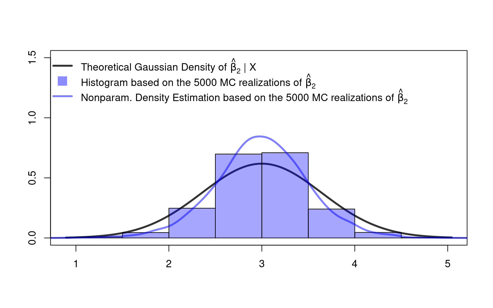
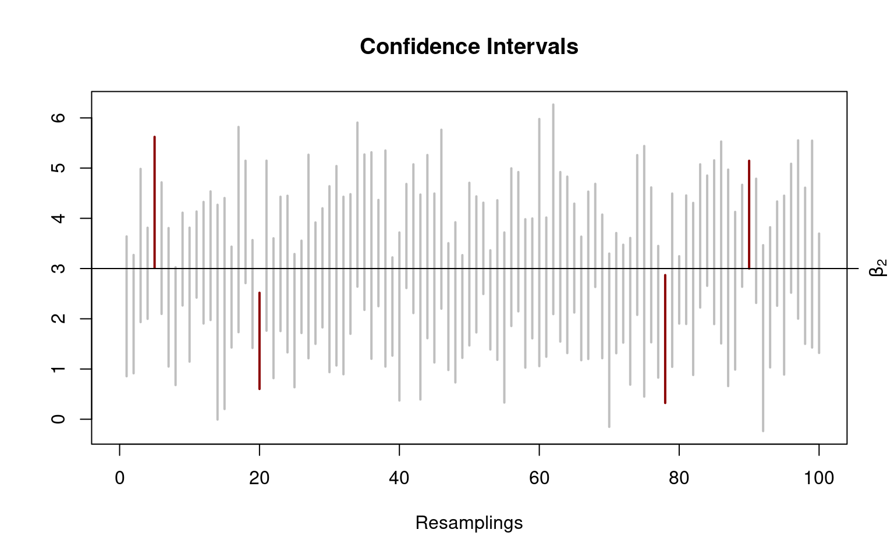

4.7 Practice: Small Sample Inference
Let’s apply the above exact inference methods using . First, we program a function which allows us to generate data from the following model, i.e., from the following fully specified data generating process: \[\begin{align*} Y_i &=\beta_1+\beta_2X_{i2}+\beta_3X_{i3}+\eps_i,\qquad i=1,\dots,n\\ \beta &=(\beta_1,\beta_2,\beta_3)'=(2,3,4)'\\ X_{i2}&\sim U[2,10]\\ X_{i3}&\sim U[12,22]\\ \eps_i&\sim\mathcal{N}(0,3^2), \end{align*}\] where \((Y_i,X_i)\) is assumed i.i.d. across \(i=1,\dots,n\). Below, in the codes, I use \(n=10\), but, of course, other sample sizes can be considered too. Under the assumptions of this chapter, we do exact inference that is specific to any given sample size \(n\).
The below function allows to sample new realizations of \(Y_1,\dots,Y_n\) conditionally on a given data matrix \(X\). Moreover, you can provide your own values for the sample size \(n\) and for the parameter vector \(\beta=(\beta_1,\beta_2,\beta_3)'\).
## Function to generate artificial data
## If X=NULL: new X variables are generated
## If the user gives X variables,
## the sampling of new Y variables is conditionally on
## the given X variables.
myDataGenerator <- function(n, beta, X=NULL, sigma=3){
if(is.null(X)){
X <- cbind(rep(1, n),
runif(n, 2, 10),
runif(n,12, 22))
}
eps <- rnorm(n, sd=sigma)
Y <- X %*% beta + eps
data <- data.frame("Y"=Y,
"X_1"=X[,1], "X_2"=X[,2], "X_3"=X[,3])
##
return(data)
}
## Define a true beta vector
beta_true <- c(2,3,4)
## Check:
## Generate Y and X data
test_data <- myDataGenerator(n = 10, beta=beta_true)
## Generate new Y data conditionally on X
X_cond <- cbind(test_data$X_1,
test_data$X_2,
test_data$X_3)
test_data_new <- myDataGenerator(n = 10,
beta = beta_true,
X = X_cond)
## compare
round(head(test_data, 3), 2) # New Y, new X
#> Y X_1 X_2 X_3
#> 1 89.36 1 4.04 19.62
#> 2 96.87 1 8.19 17.55
#> 3 88.71 1 2.81 20.34
round(head(test_data_new, 3), 2) # New Y, conditionally on X
#> Y X_1 X_2 X_3
#> 1 96.06 1 4.04 19.62
#> 2 95.72 1 8.19 17.55
#> 3 94.02 1 2.81 20.344.7.1 Normally Distributed \(\hat\beta|X\)
The above data generating process fulfills our regulatory assumptions Assumption 1-4\(^*\). So, by theory, the estimators \(\hat\beta_k|X\) should be normal distributed conditionally on \(X\) \[ \hat\beta_k|X\sim\mathcal{N}(\beta_k,\sigma^2[(X'X)^{-1}]_{kk}) \] where \([(X'X)^{-1}]_{kk}\) denotes the element in the \(k\)th row and \(k\)th column of the matrix \((X'X)^{-1}\). Let’s check the distribution by means of a Monte Carlo simulation for the case of \(\hat\beta_2|X\) with a small sample size of \(n=10\).
set.seed(123)
n <- 10 # a small sample size
beta_true <- c(2,3,4) # true data vector
sigma <- 3 # true standard deviation of the error term (var=sigma^2)
## Let's generate a data set from our data generating process
mydata <- myDataGenerator(n = n, beta=beta_true)
X_cond <- cbind(mydata$X_1, mydata$X_2, mydata$X_3)
## True mean and variance of the true normal distribution
## of beta_hat_2|X=X_cond:
# true mean
beta_true_2 <- beta_true[2]
# true variance
var_true_beta_2 <- sigma^2 * diag(solve(t(X_cond) %*% X_cond))[2]
## Let's generate 5000 realizations from beta_hat_2
## conditionally on X=X_cond and check whether the empirical
## distribution of these 5000 realizations is close
## to the true normal distribution of beta_hat_2:
rep <- 5000 # MC replications
beta_hat_2 <- rep(NA, times=rep)
##
for(r in 1:rep){
MC_data <- myDataGenerator(n = n,
beta = beta_true,
X = X_cond)
lm_obj <- lm(Y ~ X_2 + X_3, data = MC_data)
beta_hat_2[r] <- coef(lm_obj)[2]
}
## Compare
## True beta_2 versus average of beta_hat_2 estimates
beta_true_2
#> [1] 3
round(mean(beta_hat_2), 4)
#> [1] 3.0091
## True variance of beta_hat_2 versus
## empirical variance of beta_hat_2 estimates
round(var_true_beta_2, 4)
#> [1] 0.416
round(var(beta_hat_2), 4)
#> [1] 0.4235
## True normal distribution of beta_hat_2 versus
## empirical density of beta_hat_2 estimates
library("scales")
curve(expr = dnorm(x, mean = beta_true_2,
sd=sqrt(var_true_beta_2)),
xlab="",ylab="", col=gray(.2), lwd=3, lty=1,
xlim=range(beta_hat_2), ylim=c(0,1.1))
hist(beta_hat_2, freq=FALSE, col=alpha("blue",.35), add=TRUE)
lines(density(beta_hat_2, bw = bw.SJ(beta_hat_2)),
col=alpha("blue",.5), lwd=3)
legend("topleft", lty=c(1,NA,1), lwd=c(3,NA,3), pch=c(NA,15,NA), pt.cex=c(NA,2,NA),
col=c(gray(.2), alpha("blue",.45), alpha("blue",.5)), bty="n", legend=
c(expression(
"Theoretical Gaussian Density of"~hat(beta)[2]~'|'~X),
expression(
"Histogram based on the 5000 MC realizations of"~
hat(beta)[2]~'|'~X),
expression(
"Nonparametric Density Estimation based on the 5000 MC realizations of"~
hat(beta)[2]~'|'~X))) Great! The nonparametric density estimation (estimated via ) and the histogram computed based on the 5000 simulated realizations of \(\hat\beta_2|X\) are indicating that \(\hat\beta_2|X\) is really normally distributed as described by our theoretical result in Equation \(\eqref{eq:ssnorm}\).
Great! The nonparametric density estimation (estimated via ) and the histogram computed based on the 5000 simulated realizations of \(\hat\beta_2|X\) are indicating that \(\hat\beta_2|X\) is really normally distributed as described by our theoretical result in Equation \(\eqref{eq:ssnorm}\).
However, what would happen if we would sample on \(X\)? How does the distribution of \(\hat\beta_2\) would then look like?
set.seed(123)
## Let's generate 5000 realizations from beta_hat_2
## WITHOUT conditioning on X
beta_hat_2_uncond <- rep(NA, times=rep)
##
for(r in 1:rep){
MC_data <- myDataGenerator(n = n,
beta = beta_true)
lm_obj <- lm(Y ~ X_2 + X_3, data = MC_data)
beta_hat_2_uncond[r] <- coef(lm_obj)[2]
}
## Compare
## True beta_2 versus average of beta_hat_2 estimates
beta_true_2
#> [1] 3
round(mean(beta_hat_2_uncond), 4)
#> [1] 2.9973
## True variance of beta_hat_2 versus
## empirical variance of beta_hat_2 estimates
round(var_true_beta_2, 4)
#> [1] 0.416
round(var(beta_hat_2_uncond), 4)
#> [1] 0.2521
## Plot
curve(expr = dnorm(x, mean = beta_true_2,
sd=sqrt(var_true_beta_2)),
xlab="",ylab="", col=gray(.2), lwd=3, lty=1,
xlim=range(beta_hat_2_uncond), ylim=c(0,1.5))
hist(beta_hat_2_uncond, freq=FALSE, col=alpha("blue",.35), add=TRUE)
lines(density(beta_hat_2_uncond, bw=bw.SJ(beta_hat_2_uncond)),
col=alpha("blue",.5), lwd=3)
legend("topleft", lty=c(1,NA,1), lwd=c(3,NA,3), pch=c(NA,15,NA), pt.cex=c(NA,2,NA),
col=c(gray(.2), alpha("blue",.45), alpha("blue",.5)), bty="n", legend=
c(expression(
"Theoretical Gaussian Density of"~hat(beta)[2]~'|'~X),
expression(
"Histogram based on the 5000 MC realizations of"~
hat(beta)[2]),
expression("Nonparam. Density Estimation based on the 5000 MC realizations of"~
hat(beta)[2]))) Not so good. Since we do not condition on \(X\), the realizations of \(X\) affect the distribution of \(\hat\beta\) and our theoretical Gaussian distribution result in Equation \(\eqref{eq:ssnorm}\) does not apply anymore.
4.7.2 Testing Multiple Parameters
In the following, we do inference about multiple parameters. We test \[\begin{align*} H_0:&\beta_2=3\quad\text{and}\quad\beta_3=4\\ \text{versus}\quad H_A:&\beta_2\neq 3\quad\text{and/or}\quad\beta_3\neq 4. \end{align*}\] Or equivalently \[\begin{align*} H_0:&R\beta -r = 0 \\ H_A:&R\beta -r \neq 0, \end{align*}\] where \[ R=\left( \begin{matrix} 0&1&0\\ 0&0&1\\ \end{matrix}\right)\quad\text{ and }\quad r=\left(\begin{matrix}3\\4\\\end{matrix}\right). \] The following \(\textsf{R}\) code can be used to test this hypothesis:
suppressMessages(library("car")) # for linearHyothesis()
# ?linearHypothesis
## Estimate the linear regression model parameters
lm_obj <- lm(Y ~ X_2 + X_3, data = mydata)
## Option 1:
car::linearHypothesis(model = lm_obj,
hypothesis.matrix = c("X_2=3", "X_3=4"))
#> Linear hypothesis test
#>
#> Hypothesis:
#> X_2 = 3
#> X_3 = 4
#>
#> Model 1: restricted model
#> Model 2: Y ~ X_2 + X_3
#>
#> Res.Df RSS Df Sum of Sq F Pr(>F)
#> 1 9 87.285
#> 2 7 37.599 2 49.686 4.6252 0.05246 .
#> ---
#> Signif. codes: 0 '***' 0.001 '**' 0.01 '*' 0.05 '.' 0.1 ' ' 1
## Option 2:
R <- rbind(c(0,1,0),
c(0,0,1))
car::linearHypothesis(model = lm_obj,
hypothesis.matrix = R,
rhs = c(3,4))
#> Linear hypothesis test
#>
#> Hypothesis:
#> X_2 = 3
#> X_3 = 4
#>
#> Model 1: restricted model
#> Model 2: Y ~ X_2 + X_3
#>
#> Res.Df RSS Df Sum of Sq F Pr(>F)
#> 1 9 87.285
#> 2 7 37.599 2 49.686 4.6252 0.05246 .
#> ---
#> Signif. codes: 0 '***' 0.001 '**' 0.01 '*' 0.05 '.' 0.1 ' ' 1Not surprisingly, we cannot reject the null hypothesis at a significance level of, for instance, \(\alpha=0.05\) since we actually test the true null hypothesis. However, in repeated samples we should nevertheless observe \(\alpha\cdot 100\%\) type I errors (false rejections of \(H_0\)). Let’s check this using the following Monte Carlo simulation:
## Let's generate 5000 F-test decisions and check
## whether the empirical rate of type I errors is
## close to the theoretical significance level.
rep <- 5000 # MC replications
F_test_pvalues <- rep(NA, times=rep)
##
for(r in 1:rep){
## generate new MC_data conditionally on X_cond
MC_data <- myDataGenerator(n = n,
beta = beta_true,
X = X_cond)
lm_obj <- lm(Y ~ X_2 + X_3, data = MC_data)
## save the p-value
p <- linearHypothesis(lm_obj,
c("X_2=3", "X_3=4"))$`Pr(>F)`[2]
F_test_pvalues[r] <- p
}
##
signif_level <- 0.05
rejections <- F_test_pvalues[F_test_pvalues < signif_level]
round(length(rejections)/rep, 3)
#> [1] 0.05
##
signif_level <- 0.01
rejections <- F_test_pvalues[F_test_pvalues < signif_level]
round(length(rejections)/rep, 3)
#> [1] 0.009Note that this is actually a very strong result. First, it means that we correctly control for the type I error rate since the type I error rate is not larger than the chosen significance level \(\alpha\). Second, it means that the test is not conservative (i.e. very efficient) since the empirical type I error rate is really close to the chosen significance level \(\alpha\). (In fact, if we would increase the number of Monte Carlo repetitions, the empirical type I error rate would converge to the selected significance level \(\alpha\) due to the law of large numbers.)
Next, we check how well the \(F\) test detects certain violations of the null hypothesis. We do this by using the same data generating process, but by testing the following incorrect null hypothesis: \[\begin{align*} H_0:&\beta_2=4\quad\text{and}\quad\beta_3=4\\ H_A:&\beta_2\neq 4\quad\text{and/or}\quad\beta_3\neq 4 \end{align*}\]
set.seed(321)
rep <- 5000 # MC replications
F_test_pvalues <- rep(NA, times=rep)
##
for(r in 1:rep){
## generate new MC_data conditionally on X_cond
MC_data <- myDataGenerator(n = n,
beta = beta_true,
X = X_cond)
lm_obj <- lm(Y ~ X_2 + X_3, data = MC_data)
## save p-values of all rep-many tests
F_test_pvalues[r] <- linearHypothesis(lm_obj,
c("X_2=4","X_3=4"))$`Pr(>F)`[2]
}
##
signif_level <- 0.05
rejections <- F_test_pvalues[F_test_pvalues < signif_level]
length(rejections)/rep
#> [1] 0.3924Indeed, we can now reject the (false) null hypothesis in approximately 39% of all resamplings from the true data generating process. This also means that we are not able to the violation of the null hypothesis in \(100\%-39\%=62\%\) of cases. Therefore, we can never use an insignificant test result (p-value\(\geq\alpha\)) as a justification to accept the null hypothesis.
Moreover, note that the \(F\) test is not informative about which part of the null hypothesis (\(\beta_2=4\) and/or \(\beta_3=4\)) is violated – we only get the information that at least one of the multiple parameter hypotheses is violated:
car::linearHypothesis(lm_obj, c("X_2=4", "X_3=4"))
#> Linear hypothesis test
#>
#> Hypothesis:
#> X_2 = 4
#> X_3 = 4
#>
#> Model 1: restricted model
#> Model 2: Y ~ X_2 + X_3
#>
#> Res.Df RSS Df Sum of Sq F Pr(>F)
#> 1 9 141.245
#> 2 7 32.572 2 108.67 11.677 0.005889 **
#> ---
#> Signif. codes: 0 '***' 0.001 '**' 0.01 '*' 0.05 '.' 0.1 ' ' 14.7.3 Dualty of Confidence Intervals and Hypothesis Tests
Confidence intervals can be computed using as following:
signif_level <- 0.05
## 95% CI for beta_2
confint(lm_obj, parm = "X_2", level = 1 - signif_level)
#> 2.5 % 97.5 %
#> X_2 1.370315 3.563536
## 95% CI for beta_3
confint(lm_obj, parm = "X_3", level = 1 - signif_level)
#> 2.5 % 97.5 %
#> X_3 3.195389 4.695134We can use these two-sided confidence intervals to do hypothesis tests. For instance, when testing the null hypothesis \[\begin{align*} H_0:&\beta_3=4\\ \text{versus}\quad H_A: &\beta_3\neq 4 \end{align*}\] we can check whether the confidence interval \(\operatorname{CI}_{1-\alpha}\) contains the hypothetical value \(4\) or not. In case of \(4\in \operatorname{CI}_{1-\alpha}\), we cannot reject the null hypothesis. In case of \(4\not\in \operatorname{CI}_{1-\alpha}\), we reject the null hypothesis.
If the Assumption 1-4\(^\ast\) hold true, then \(\operatorname{CI}_{1-\alpha}\) is an exact confidence interval. That is, under the null hypothesis, it falsely rejects the null hypothesis in only \(\alpha\cdot 100\%\) of resamplings. Let’s check this in the following \(\textsf{R}\) code:
## Let's generate 1000 CIs
set.seed(123)
signif_level <- 0.05
rep <- 5000 # MC replications
confint_m <- matrix(NA, nrow=2, ncol=rep)
##
for(r in 1:rep){
## generate new MC_data conditionally on X_cond
MC_data <- myDataGenerator(n = n,
beta = beta_true,
X = X_cond)
lm_obj <- lm(Y ~ X_2 + X_3, data = MC_data)
## save the p-value
CI <- confint(lm_obj, parm="X_2", level=1-signif_level)
confint_m[,r] <- CI
}
##
inside_CI <- confint_m[1,] <= beta_true_2 &
beta_true_2 <= confint_m[2,]
## CI-lower, CI-upper, beta_true_2 inside?
head(cbind(t(confint_m), inside_CI))
#> inside_CI
#> [1,] 0.8555396 3.639738 1
#> [2,] 0.9143542 3.270731 1
#> [3,] 1.9336526 4.984167 1
#> [4,] 1.9985874 3.812695 1
#> [5,] 3.0108642 5.621791 0
#> [6,] 2.0967675 4.716398 1
round(length(inside_CI[inside_CI == FALSE])/rep, 2)
#> [1] 0.05
nCIs <- 100
plot(x=0,y=0,type="n",xlim=c(0,nCIs),ylim=range(confint_m[,1:nCIs]),
ylab="", xlab="Resamplings", main="Confidence Intervals")
for(r in 1:nCIs){
if(inside_CI[r]==TRUE){
lines(x=c(r,r), y=c(confint_m[1,r], confint_m[2,r]),
lwd=2, col=gray(.5,.5))
}else{
lines(x=c(r,r), y=c(confint_m[1,r], confint_m[2,r]),
lwd=2, col="darkred")
}
}
axis(4, at=beta_true_2, labels = expression(beta[2]))
abline(h=beta_true_2)